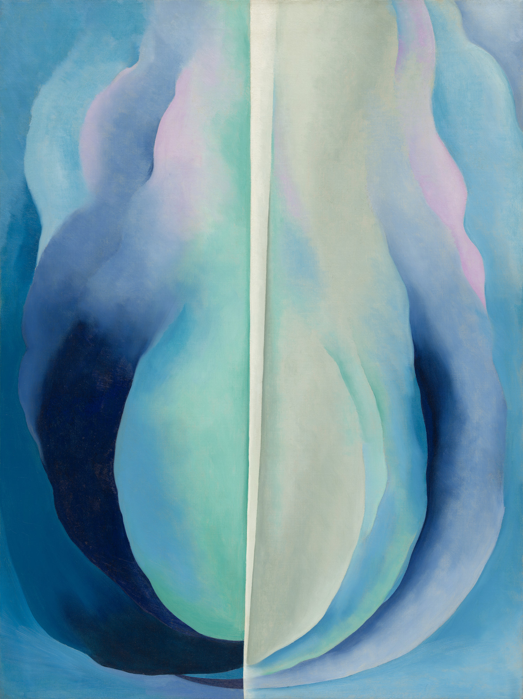

Profile
- Name: Georgia O'Keeffe
- Movement: American modernism, Precisionism
- Bio:Georgia Totto O'Keeffe (November 15, 1887 - March 6, 1986) was an American artist. She was known for her paintings of enlarged flowers, New York skyscrapers, and New Mexico landscapes. O'Keeffe has been recognized as the "Mother of American modernism".

Works
click on images to read articles
 |
 |
 |
 |